Tutti i lavori
Altri progetti
images/product_category.png
'">
06 / PyTorch · DistilBERT · FastAPI
Product Category Classifier ML
Progetto ML end-to-end che predice la categoria di un prodotto da nome + brand in più lingue (TF-IDF/Logistic Regression + fine-tuning di DistilBERT multilingue), esposto tramite FastAPI con Docker.
PyTorch
DistilBERT
FastAPI
Docker
NLP
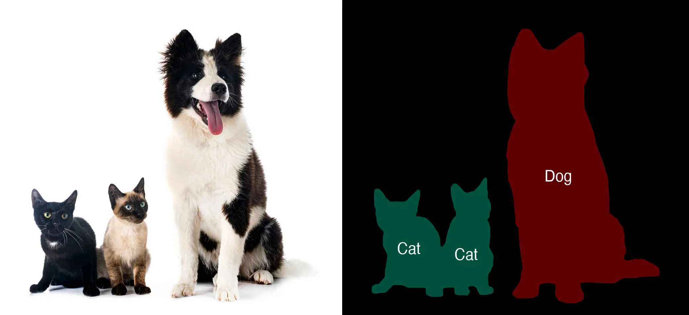
images/segmentation.png
'">
10 / PyTorch · Image Segmentation · Deep Learning
Image Segmentation
Esplora l'image segmentation sia con tecniche classiche di image processing sia con approcci moderni di deep learning — da thresholding, watershed e metodi basati sui contorni fino a neural network di segmentation, applicati a immagini reali.
PyTorch
Image Segmentation
Deep Learning
Computer Vision
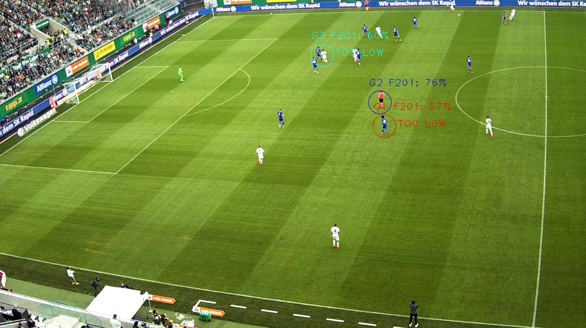
images/cplusplus.png
'">
03 / YOLOv3 · C++ · OpenCV
Football Detection & Tracking
Tesi triennale presso Xtensa Srl — confronto tra tracking basato su deep learning con YOLOv3 e algoritmi classici come Mean-shift per la detection e il tracking di calciatori.
YOLOv3
Darknet
C/C++
OpenCV
MATLAB
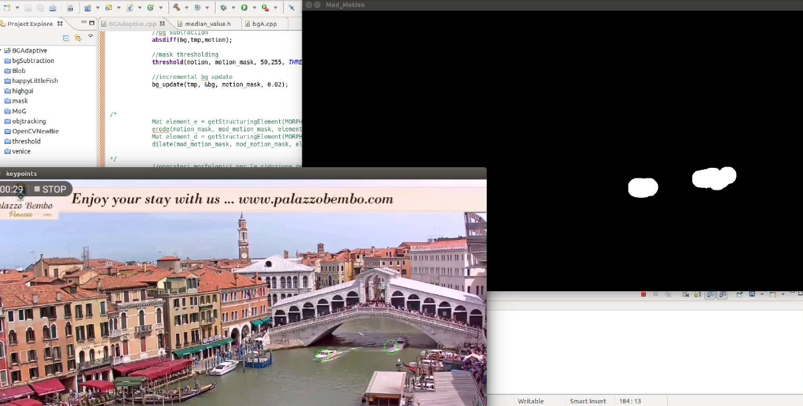
images/script.png
'">
01 / C++ · OpenCV · MATLAB
Stima del traffico navale a Venezia
Stima il traffico navale a Venezia da un video di webcam sul Canal Grande con algoritmi di motion detection — background subtraction adattiva, morphological filters e blob detection per contare le barche e calcolare flow rate, media integrale e mediana.
C++
OpenCV
MATLAB
Background Subtraction
Blob Detection
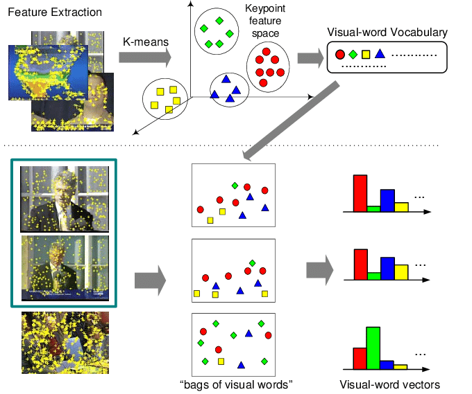
images/bag_visual_words.png
'">
02 / Python · OpenCV
Visual Search System
Image classification tramite un sistema di Visual Search basato su un albero gerarchico K-means. Le feature sono descrittori di keypoint SIFT, valutati con TF-IDF tramite il modello Bag of Visual Words.
Python
OpenCV
SIFT
Bag of Visual Words
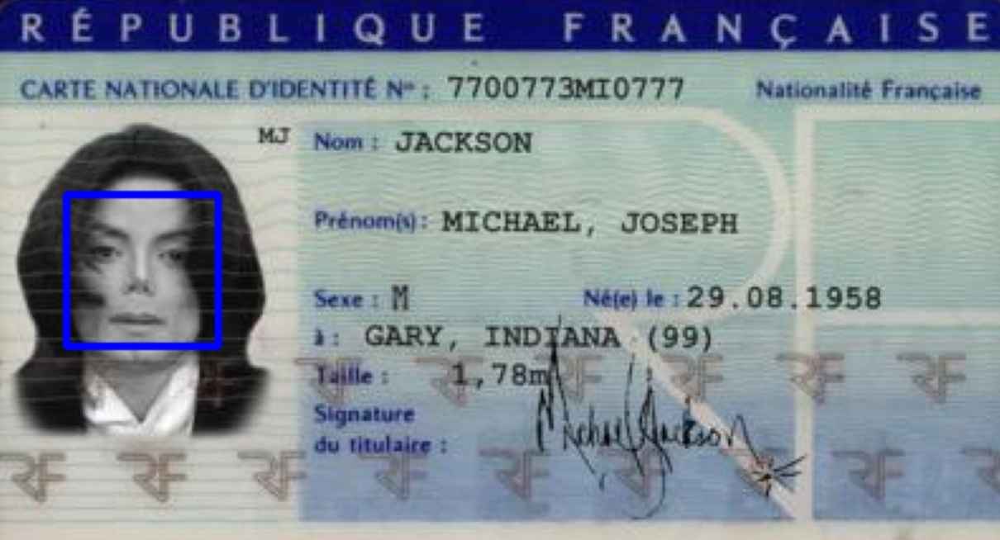
images/face_matching.png
'">
04 / Python · OpenCV · Face Recognition
Face Match & Intrusion Detection
Progetto di computer vision in due parti che combina face detection, face matching e facial attribute analysis (età, genere, etnia, emozione) con intrusion detection per scenari di video surveillance in stile CCTV.
Face Recognition
OpenCV
Video Surveillance
Deep Learning
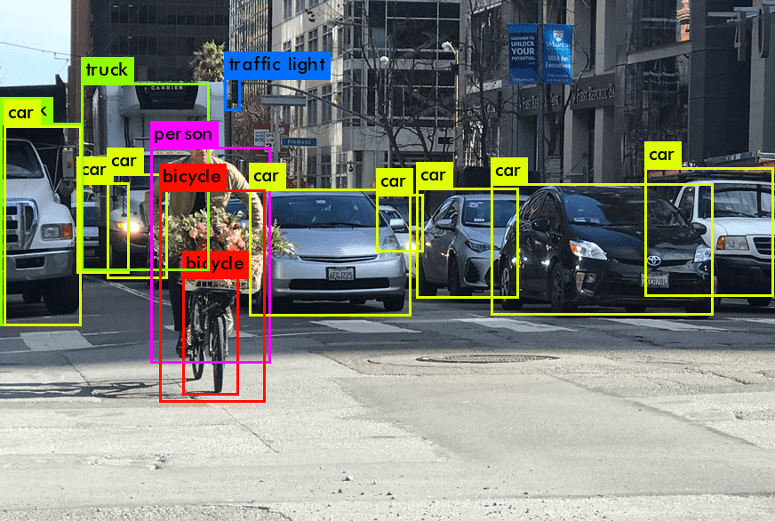
images/object_detection.png
'">
05 / YOLOv8 · Ultralytics · Roboflow
YOLOv8 Object Detection
Pipeline end-to-end di object detection personalizzata con Ultralytics YOLOv8 — preparazione del dataset con Roboflow, fine-tuning, evaluation e inference su immagini e video, incluso l'object tracking.
YOLOv8
Ultralytics
Roboflow
Object Tracking
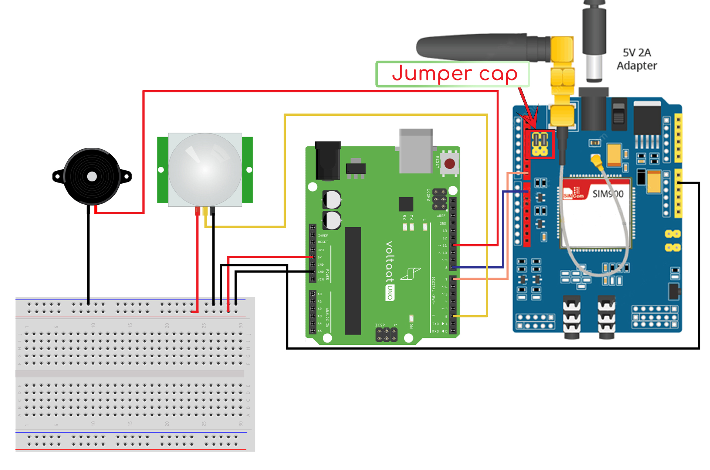
images/iot_sms_alert.png
'">
07 / C++ · Arduino · GSM
IoT SMS Safety Alert System
Sistema di check-in di sicurezza su Arduino attivato da un pulsante: una pressione invia un SMS di check-in, una seconda pressione (se senza risposta) invia a tutti i contatti di emergenza l'ultima posizione GPS nota e un link a Google Maps.
C++
Arduino
GSM / SMS
Embedded Systems
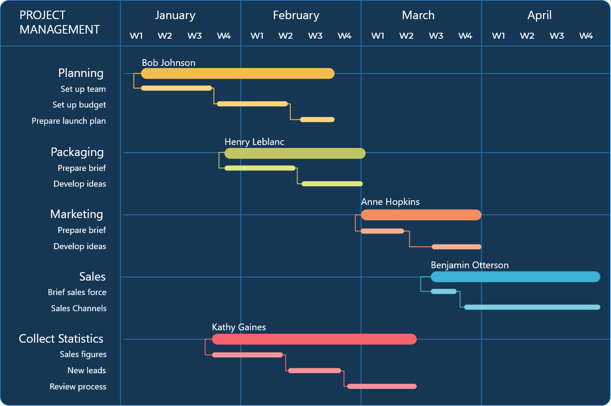
images/gantt_chart.png
'">
08 / Python · Pandas · Matplotlib
PM Gantt Chart Generator
Tool Python leggero che converte una task list strutturata in Excel in un Gantt chart pulito e pronto per la pubblicazione, per PM e ingegneri senza accesso a Jira.
Python
Pandas
Matplotlib
Project Management
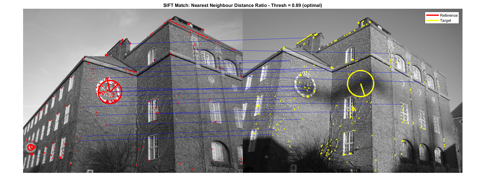
images/match_sift.png
'">
09 / MATLAB · VLFeat
Image Matching: SIFT & SURF
Analisi di due diffusi scale-invariant feature detector — SIFT e SURF — per la feature extraction e l'image matching tramite il nearest-neighbour distance ratio.
MATLAB
VLFeat
SIFT
SURF
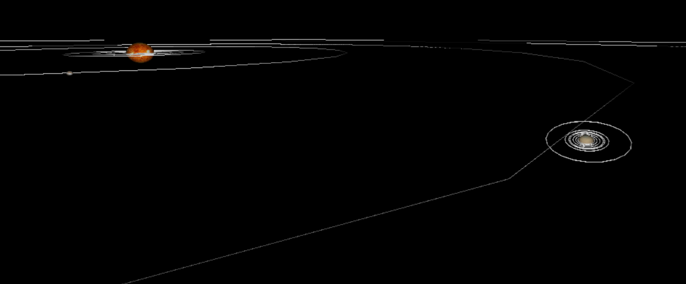
images/saturn.png
'">
10 / C++ · OpenGL
Sistema solare (OpenGL)
Demo 3D interattiva del Sistema Solare con navigazione da tastiera e texture .jpg sui pianeti, realizzata con GLEW e GLUT.
C++
OpenGL
GLEW
GLUT
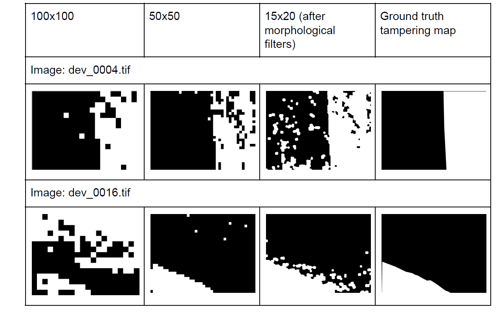
images/tampering.png
'">
11 / MATLAB
Image Tampering Detection
Progetto di Multimedia Data Security per la tampering detection e localization nelle immagini con tecniche di forensics basate su PRNU e JPEG.
MATLAB
PRNU
JPEG Forensics
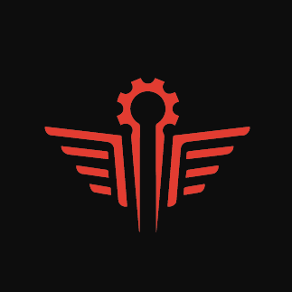
images/Logo-Engel.png
'">
12 / Design
Logo della startup Engel
Ideazione e design in prima persona del logo della startup Engel durante il corso Startup Lab presso Clab — Università di Trento, con Adobe Illustrator.
Adobe Illustrator
Brand Design
Startup Lab


 Federico Favia
Federico Favia